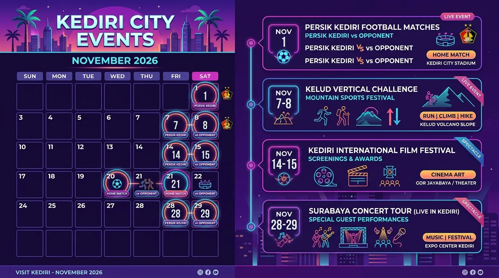

Daftar Isi Artikel
- Ringkasan Jadwal Event Kediri November 2026
- Laga Kandang Persik Kediri pada November 2026
- Kelud Vertical Challenge: Event Olahraga di Lereng Gunung Kelud
- Kediri International Film Festival 2026
- Event Terdekat di Luar Kediri yang Diminati Warga (Simple Plan Surabaya)
- Cara Membeli Tiket Event di Kediri Event
- Cara Memastikan Jadwal Event Tidak Berubah
- Pertanyaan yang Sering Diajukan (FAQ)
Kediri Event — Event di Kediri pada November 2026 mencakup laga kandang Persik Kediri pada 1 dan 21 November, serta Kelud Vertical Challenge dan Kediri International Film Festival yang tercantum dalam kalender wisata Pemkab Kediri, dengan tanggal pasti kedua event tersebut menunggu rilis resmi panitia.
Ringkasan Inti Agenda Kediri November 2026:
- Laga Kandang Persik Kediri: Dua laga kandang Persik Kediri di BRI Super League 2026/27 dijadwalkan pada 1 November dan 21 November 2026.
- Agenda Wisata Unggulan: Kelud Vertical Challenge dan Kediri International Film Festival masuk agenda November dalam kalender wisata Pemkab Kediri.
- Pembaruan Terkini: Tanggal, lokasi, dan harga tiket event yang belum dirilis resmi akan terus diperbarui secara berkala di halaman ini.
- Akses Tiket Resmi: Tiket event dan informasi jadwal dapat dicek melalui katalog Kediri Event atau ditanyakan langsung via WhatsApp.
- Konfirmasi Pra-Acara: Jadwal liga dan event outdoor dapat berubah sewaktu-waktu, sehingga pengecekan ulang sehari sebelum acara sangat dianjurkan.
Ringkasan Jadwal Event Kediri November 2026
Empat agenda utama yang sudah terlihat untuk November 2026 adalah dua laga kandang Persik Kediri, Kelud Vertical Challenge, dan Kediri International Film Festival, ditambah satu konser besar di Surabaya yang sangat diminati oleh warga Kediri dan sekitarnya.
| Tanggal | Event | Lokasi | Status Informasi |
|---|---|---|---|
| Minggu, 1 Nov 2026, 15.30 WIB | Sepak Bola Persik Kediri vs Persita | Kandang Persik (cek venue resmi) | Jadwal Liga |
| Sabtu, 21 Nov 2026, 15.30 WIB | Sepak Bola Persik Kediri vs PSIM Yogyakarta | Kandang Persik (cek venue resmi) | Jadwal Liga |
| November 2026 (Tanggal menunggu rilis) |
Sport Tourism Kelud Vertical Challenge | Kabupaten Kediri (Lereng Kelud) | Kalender Pemkab Kediri |
| November 2026 (Tanggal menunggu rilis) |
Seni & Sinema Kediri International Film Festival | Kabupaten Kediri | Kalender Pemkab Kediri |
| Sabtu, 28 Nov 2026 | Konser Musik Simple Plan Indonesia Tour | Surabaya (Jawa Timur) | Di luar Kediri |
Tabel ini kami perbarui begitu panitia merilis informasi resmi, sehingga status "menunggu rilis" akan berubah menjadi tanggal dan lokasi pasti secara berkala.

Kalender event Kediri bulan November 2026 dalam bentuk infografik visual agenda olahraga, budaya, dan hiburan musik.
Laga Kandang Persik Kediri pada November 2026
Persik Kediri dijadwalkan menjamu Persita pada Minggu, 1 November 2026, dan PSIM Yogyakarta pada Sabtu, 21 November 2026, keduanya dengan kick-off pukul 15.30 WIB dalam lanjutan kompetisi BRI Super League 2026/27.
- Laga Pembuka November: Laga melawan Persita menjadi pertandingan kandang pembuka bulan November bagi seluruh barisan suporter Persikmania yang haus akan poin kandang.
- Laga Akhir Pekan: Pertandingan menghadapi PSIM Yogyakarta digelar di akhir pekan (hari Sabtu), memberikan fleksibilitas tinggi bagi para penonton dari luar kota seperti Nganjuk, Blitar, dan Tulungagung untuk hadir langsung di tribun.
- Jadwal Tandang: Pada bulan yang sama Persik juga melakoni laga tandang ke luar pulau, termasuk menghadapi Bali United pada tanggal 8 November 2026.
- Verifikasi Regulasi: Jadwal kick-off dan lokasi stadion dapat berubah sewaktu-waktu mengikuti keputusan operator liga dan kepolisian, sehingga pengecekan ulang menjelang hari pertandingan sangat disarankan.
Kelud Vertical Challenge: Event Olahraga di Lereng Gunung Kelud
Kelud Vertical Challenge adalah event minat khusus untuk pencinta olahraga ekstrem yang dijadwalkan pada November 2026 dalam kalender wisata Pemkab Kediri, dengan format lomba, rute pendakian, dan biaya pendaftaran yang akan segera diumumkan oleh panitia pelaksana.
- Target Peserta: Event ini menyasar para pelari lintas alam (trail runner), pesepeda tanjakan (uphill cyclist), dan penggemar olahraga ketahanan fisik yang menyukai tantangan elevasi terjal.
- Ikon Kawasan: Lokasi acara berada di wilayah Kabupaten Kediri, dengan Gunung Kelud sebagai mahakarya panorama alam dan kawah aktif yang eksotis.
- Persiapan Fisik: Para calon peserta sebaiknya mulai menyiapkan kondisi fisik jauh hari karena medan pegunungan Kelud menuntut stamina prima dan daya tahan kardiorespirasi tinggi.
- Akses Wisata: Jalur menuju kawah Kelud sudah dapat diakses dengan baik melalui rute Wates dan Ngancar dengan ragam akomodasi villa serta kuliner nanas khas lereng Kelud.
Kediri International Film Festival 2026
Kediri International Film Festival dijadwalkan hadir pada November 2026 dalam agenda resmi kalender wisata Dinas Kebudayaan dan Pariwisata Pemkab Kediri. Festival ini dirancang untuk mewadahi karya para sineas independen, pelaku industri kreatif visual, dan penikmat film dari berbagai penjuru tanah air hingga mancanegara.
Hingga artikel ini dipublikasikan, panitia pelaksana masih memfinalisasi kurasi film, lokasi auditorium pemutaran (screening room), serta sesi workshop perfilman. Tim Kediri Event akan segera menambahkan tanggal spesifik, daftar film terpilih, venue resmi, dan prosedur pembelian tiket pemutaran begitu rilis pers resmi diluncurkan.
Event Terdekat di Luar Kediri yang Diminati Warga
Bagi penikmat musik pop-punk legendaris, Simple Plan Indonesia Tour dipastikan tampil menggebrak panggung Surabaya pada 28 November 2026. Antusiasme warga Kediri untuk menonton konser megah ini terbilang sangat tinggi karena letak geografis Kediri yang dekat dengan ibu kota provinsi Jawa Timur.
- Akses Transportasi Mudah: Surabaya dapat dijangkau dari Kediri dalam perjalanan darat 2 hingga 3 jam saja menggunakan kereta api Commuter Line Dhoho, kereta antarkota via Stasiun Kediri, maupun shuttle travel langsung via jalan tol Kertosono-Surabaya.
- Beli Tiket Resmi: Pastikan Anda membeli tiket konser hanya melalui kanal ticketing resmi yang ditunjuk oleh pihak promotor, dan hindari perantara atau calo media sosial yang rentan penipuan tiket ganda.
- Manajemen Perjalanan: Rencanakan akomodasi menginap atau jadwal kepulangan dini hari sebelum bertolak dari Kediri agar agenda menonton konser berjalan aman dan nyaman.
Cara Membeli Tiket Event di Kediri Event
Sebagai portal event nomor satu di Kediri Raya, Kediri Event menyediakan alur pemesanan tiket yang praktis, transparan, dan terverifikasi secara instan:
- Pilih Event di Katalog: Buka menu Katalog Event di kedirievent.com dan pilih acara yang ingin Anda hadiri.
- Konfirmasi Tiket via WhatsApp: Hubungi admin melalui WhatsApp di nomor 0895-6390-68080 untuk mengecek ketersediaan kuota kategori tiket dan metode pembayaran resmi (Transfer Bank / QRIS).
- Terima E-Ticket Digital: Setelah konfirmasi pelunasan, e-ticket resmi dengan barcode unik akan dikirimkan langsung ke WhatsApp dan email Anda. Tunjukkan barcode tersebut kepada petugas gerbang tiket di lokasi acara.
Catatan: Tidak semua event dalam daftar kalender di atas dijual melalui Kediri Event, sehingga pastikan nama event yang Anda incar tertera aktif di katalog resmi kami sebelum melakukan transfer pembayaran.
Cara Memastikan Jadwal Event Tidak Berubah
Agar rencana liburan dan akhir pekan Anda berjalan tanpa hambatan, berikut tiga langkah jitu dalam memastikan jadwal acara:
- Pantau Akun Resmi Penyelenggara: Akun media sosial resmi promotor atau klub Persik Kediri adalah saluran tercepat untuk pengumuman perubahan jam sepak mula atau pergeseran lokasi pertandingan.
- Cek Berkala Halaman Ini: Halaman artikel ini dimutakhirkan secara dinamis oleh tim redaksi setiap kali ada rilis pers terbaru dari panitia atau operator liga.
- Konsultasi ke Admin Kediri Event: Tim customer care kami siap memberikan update status kesiapan tiket dan kejelasan agenda sebelum Anda berangkat menempuh perjalanan menuju venue.
Kesimpulan
Bulan November 2026 menjadi momen meriah bagi Kediri Raya dengan perpaduan laga bergengsi Persik Kediri di stadion kebanggaan, tantangan sport tourism Kelud Vertical Challenge, dan festival sinema internasional. Simpan halaman ini sebagai bookmark dan pesan tiket Anda melalui jalur resmi guna menjamin pengalaman menonton yang aman dan tak terlupakan.
Pertanyaan yang Sering Diajukan (FAQ)

Ditulis oleh: Erlang Sinatrya Putra Yusya
Event Content Specialist & EditorSpesialis kurasi konten dan liputan agenda hiburan, olahraga, dan festival di Kediri Event. Berkomitmen menghadirkan informasi jadwal terverifikasi dan panduan event terbaik bagi masyarakat Kediri Raya.
Profil Kediri Event